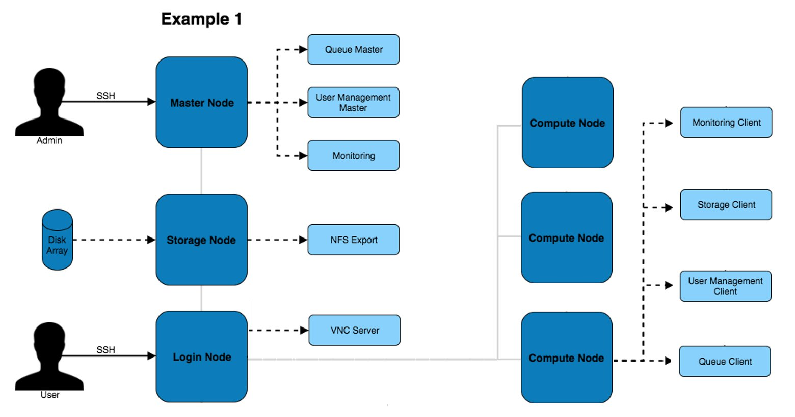
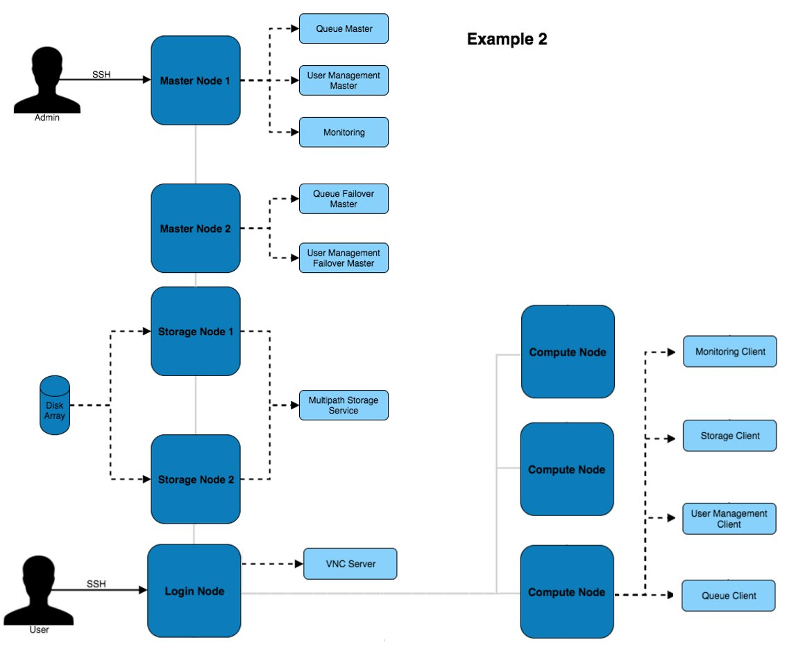
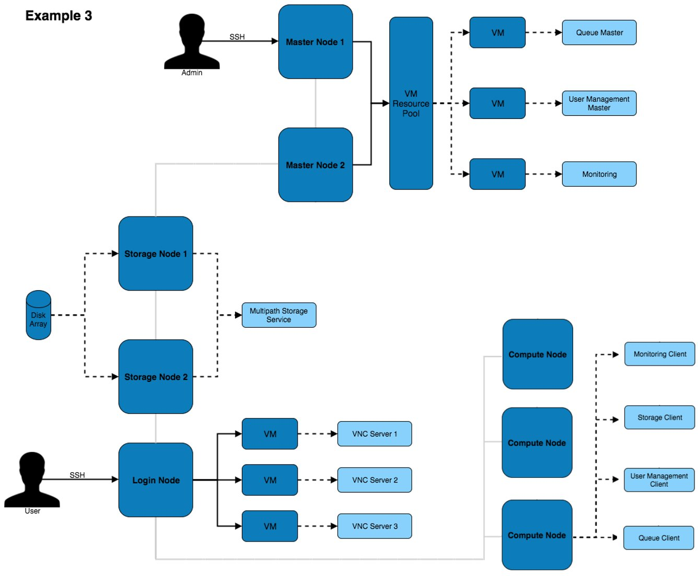
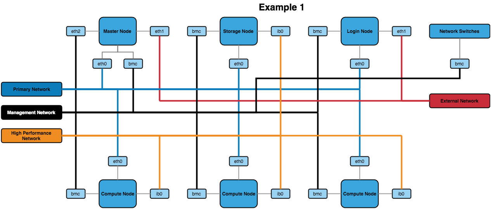

Architecture Considerations: Network and Hardware Design¶
At Alces software, the recommended network design differs slightly depending on the number of users and quantity of systems within the HPC platform.
Cluster Architectures¶
With the General Architecture Considerations in mind, diagrams of different architectures are below. They increase in complexity and redundancy as the list goes on.
Example 1 - stand-alone¶
The above architecture consists of master, login and compute nodes. The services provided by the master & login nodes can be seen to the right of each node type. This architecture only separates the services for users and admins.
Example 2 - high-availability¶
This architecture provides additional redundancy to the services running on the master node. For example, the disk array is connected to both master nodes which use multipath to ensure the higher availability of the storage device.
Example 3 - HA VMs¶
This architecture puts services inside of VMs to improve the ability to migrate and modify services with little impact to the other services and systems on the architecture. Virtual machines can be moved between VM hosts live without service disruption allowing for hardware replacements to take place on servers.
Network Designs¶
The above architectures can be implemented with any of the below network designs.
Example 1- simple¶
{kind=link}
The above design contains the minimum recommended internal networks. A primary network (for general logins and navigating the system), a management network (for BMC management of nodes and switches) and a high performance Infiniband network (connected to the nodes). The master and login nodes have access to the external network for user and admin access to the HPC network.
Note
The master node could additionally be connected to the high performance network so that compute nodes have a faster network connection to storage.
Example 2 - VLANs¶

The above network design has a few additions to the first example. The main change is the inclusion of VLANs for the primary, management and build networks (with the build network being a new addition to this design). The build network allows for systems to be toggled over to a DHCP system that uses PXE booting to kickstart an OS installation.
Other Recommendations¶
BIOS Settings¶
It’s recommended to ensure that the BIOS settings are reset to default and the latest BIOS version is installed before optimising the settings. This can ensure that any issues that may be present in the configuration before proceeding have been removed.
When it comes to optimising the BIOS settings on a system in the network, the following changes are recommended:
- Setting the power management to maximum performance
- Disabling CPU CStates
- Disabling Hyperthreading
- Enabling turbo mode
- Disabling quiet boot
- Setting BMC to use the dedicated port for BMC traffic
- Setting the node to stay off when power is restored after AC power loss
Note
The wordings for settings above may differ depending on the hardware that is being used. Look for similar settings that can be configured to achieve the same result.